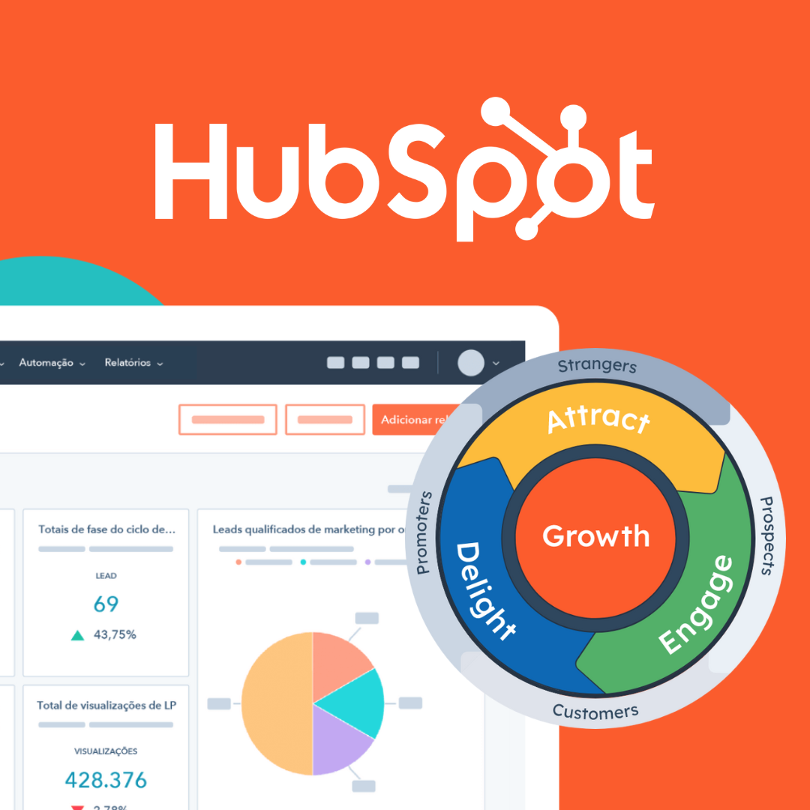

Expert HubSpot CRM setup, migration, customization, and automation to help you capture leads, close deals faster, and keep every customer relationship organized in one place.
Running a business without a properly configured CRM is a lot like trying to manage a busy store without a cash register or an inventory list — you might survive for a while, but you will lose track of leads, forget follow-ups, and watch deals slip away simply because no one was keeping score. HubSpot CRM solves that problem by giving sales, marketing, and customer service teams a single, connected place to store contacts, track deals, log conversations, and automate the repetitive tasks that eat up a workday. At Index Web Solution, we specialize in setting up, customizing, and optimizing HubSpot CRM so it works exactly the way your business operates, rather than forcing your team to adapt to a generic, out-of-the-box system.

What Makes HubSpot CRM Different From Other CRM Platforms
HubSpot CRM has become one of the most widely adopted customer relationship management platforms because it manages to be powerful enough for enterprise sales teams while remaining simple enough for a small business owner to use on day one. Unlike many legacy CRM systems that require months of training and a dedicated administrator just to keep the database clean, HubSpot is built around an intuitive, visual interface. Contacts, companies, deals, and tickets are organized into clear records that update automatically as your team interacts with customers through email, calls, meetings, and forms. Every touchpoint — a website form submission, a support ticket, an email reply, a scheduled call — gets logged to the contact's timeline, so anyone on your team can open a record and instantly understand the full history of that relationship without digging through inboxes or spreadsheets.
What truly sets HubSpot apart, though, is how tightly the CRM integrates with marketing, sales, and service tools under one roof. Instead of stitching together a CRM, an email marketing tool, a live chat widget, and a helpdesk system from four different vendors, HubSpot lets you manage all of it from a single dashboard with shared data. That means a marketing campaign can trigger a sales notification, a support ticket can update a deal stage, and a sales rep can see exactly which emails and pages a prospect engaged with before ever picking up the phone. This kind of visibility is what allows growing businesses to scale their sales and marketing efforts without adding headcount just to keep systems talking to each other.
Why Your Business Needs a Properly Configured CRM
Many businesses sign up for HubSpot CRM, import a contact list, and then wonder why they are not seeing the results they expected. The truth is that a CRM is only as effective as its setup. Default pipelines, generic deal stages, unstructured contact properties, and disconnected marketing tools will only get you a fraction of the value the platform is capable of delivering. A properly configured CRM should reflect your actual sales process — the specific stages your leads move through, the qualification criteria your team uses, the follow-up sequences that convert prospects into customers, and the reporting metrics your leadership team actually cares about.
Without this level of customization, teams tend to fall back on old habits: tracking leads in spreadsheets, following up manually, and losing visibility into where deals are getting stuck. A well-implemented HubSpot CRM eliminates these gaps. It gives sales reps a clear, prioritized list of what to do next, gives managers real-time visibility into pipeline health, and gives marketing teams the data they need to understand which campaigns are actually generating revenue rather than just website traffic. When implemented correctly, the CRM becomes the operational backbone of the business rather than another underused piece of software collecting dust.
Our HubSpot CRM Implementation Process
At Index Web Solution, we approach every HubSpot CRM project as a partnership rather than a one-time setup task. We start by understanding how your business currently generates and manages leads — what your sales cycle looks like, where prospects typically drop off, what tools you are currently using, and what your team's biggest pain points are. This discovery phase is critical because it prevents us from building a generic CRM structure that looks impressive on paper but doesn't actually match how your team sells.
Once we understand your process, we move into the configuration phase, where we build out custom deal pipelines that mirror your actual sales stages, set up contact and company properties that capture the specific information your team needs to qualify and nurture leads, and design lead scoring models that help your sales reps prioritize the prospects most likely to convert. We also configure ticket pipelines for customer service teams, ensuring that support requests are tracked, assigned, and resolved without falling through the cracks.
Data migration is often one of the most stressful parts of adopting a new CRM, and it's an area where we pay particularly close attention. Whether you are moving from spreadsheets, another CRM platform, or a patchwork of tools, we handle the cleanup and transfer of your contacts, companies, deals, and historical notes so that nothing important gets lost in the transition. We de-duplicate records, standardize formatting, and map old fields to new HubSpot properties so your team starts with a clean, trustworthy database rather than inheriting years of disorganized data.
Custom Pipeline and Deal Stage Configuration
Every business closes deals differently, and a generic five-stage pipeline rarely reflects reality. A software company's sales process might involve a demo, a technical evaluation, and a procurement review, while a real estate agency's process might involve property viewings, offer negotiations, and closing paperwork. We work closely with your sales leadership to map out the exact stages a deal moves through, from the moment a lead is qualified to the moment a contract is signed. Each stage is built with clear entry and exit criteria, so reps always know what needs to happen before a deal can move forward, and managers can spot exactly where deals are stalling.
Beyond the pipeline structure itself, we configure deal properties that capture the information your team actually needs — deal size, decision-maker contact information, expected close date, competitor involvement, and any other data points relevant to your sales strategy. This level of detail turns your CRM from a simple contact list into a genuine forecasting and reporting tool, giving leadership accurate visibility into revenue that's likely to close in a given month or quarter.
Marketing and Sales Automation
One of the most valuable aspects of HubSpot CRM is its automation engine, and it is also one of the most commonly underused. We build automated workflows that handle the repetitive tasks your team shouldn't have to do manually: sending follow-up emails when a lead fills out a form, notifying a sales rep the moment a high-value prospect revisits your pricing page, moving a deal to a new stage when specific conditions are met, or automatically assigning new leads to the right rep based on territory, industry, or deal size.
These workflows don't just save time — they ensure consistency. A lead that comes in at 2 a.m. on a Saturday gets the same prompt, professional follow-up as one that comes in during business hours on a Tuesday. Nurture sequences keep prospects engaged with relevant content until they're ready to talk to sales, internal notifications make sure no lead sits untouched for too long, and task reminders keep reps accountable for their follow-ups. Over time, this kind of automation compounds, freeing your team to spend more time actually selling and less time on data entry and manual follow-up.
Integrations That Connect Your Entire Tech Stack
HubSpot CRM becomes exponentially more powerful when it's connected to the other tools your business already relies on. We handle integrations with email platforms like Gmail and Outlook so every email conversation is automatically logged to the right contact record, calendar tools for seamless meeting scheduling, and marketing platforms so your campaigns and CRM data stay in sync. For businesses running e-commerce or WordPress websites, we connect your CRM to your website's forms, chat widgets, and checkout flow, ensuring that every lead generated online lands directly in HubSpot with the right context attached.
We also build custom integrations using HubSpot's API when a business relies on specialized software that doesn't have an out-of-the-box connector — whether that's an internal inventory system, a billing platform, or a proprietary business tool. The goal is always the same: eliminate the manual copy-pasting of data between systems and give your team one reliable source of truth for every customer interaction.
Reporting Dashboards That Actually Inform Decisions
A CRM full of data is only useful if that data is easy to interpret. We build custom reporting dashboards tailored to what different stakeholders in your business actually need to see. Sales managers get visibility into pipeline value, rep performance, and deal velocity. Marketing teams get attribution reports showing which channels and campaigns are generating the highest-quality leads. Leadership gets high-level revenue forecasts and conversion metrics without needing to dig through raw data themselves. Because these dashboards pull live data directly from your CRM, everyone in the organization is working from the same numbers, which eliminates the arguments and guesswork that come from teams tracking metrics in separate spreadsheets.
Training and Ongoing Support
A CRM implementation is only successful if your team actually uses it, and adoption is often where projects fail. We provide hands-on training sessions tailored to different roles within your organization — sales reps learn how to manage their pipeline and log activities efficiently, marketing teams learn how to build and analyze campaigns, and administrators learn how to manage properties, permissions, and workflows so the system stays clean and organized long after our engagement ends.
Because business processes evolve, we also offer ongoing support for businesses that want a partner to keep optimizing their CRM over time. This might mean adding new pipelines as you launch new product lines, refining automation as your sales process matures, or troubleshooting integrations as your tech stack grows. Our goal is for your CRM to keep pace with your business rather than becoming outdated the moment your processes change.
Who Benefits Most From a HubSpot CRM Implementation
While HubSpot CRM is flexible enough to serve almost any industry, we've found it delivers particularly strong results for service-based businesses, B2B companies with multi-step sales cycles, e-commerce brands looking to unify their marketing and customer data, and growing teams that have outgrown spreadsheets but aren't ready for the complexity and cost of enterprise platforms like Salesforce. Startups benefit from HubSpot's free and low-cost entry tiers combined with room to scale, while established businesses appreciate the platform's ability to unify previously disconnected sales, marketing, and service functions.
Regardless of industry, the businesses that benefit most share a common trait: they're tired of losing leads to poor follow-up, tired of managers not having visibility into their pipeline, and ready to replace guesswork with a structured, data-driven sales and marketing process.
Common Mistakes Businesses Make When Setting Up HubSpot on Their Own
We regularly work with businesses that tried to implement HubSpot CRM internally before reaching out for help, and the same handful of mistakes tend to show up again and again. The most common is leaving the default pipeline and deal stages untouched, which means the CRM never actually reflects how deals move through the business, making reporting meaningless and forecasting unreliable. Another frequent issue is importing contact data without cleaning it first, which fills the CRM with duplicate records, outdated information, and inconsistent formatting that undermines trust in the system from day one.
We also see businesses skip automation entirely because it feels intimidating to configure, which means reps end up doing manually what the platform was built to handle automatically — sending the same follow-up emails, updating deal stages by hand, and manually assigning leads. Over time, this defeats the purpose of adopting a CRM in the first place. Similarly, many teams never connect their marketing tools, forms, or website to the CRM, which means leads generated online have to be manually re-entered, introducing delays and errors that cost real deals.
Perhaps the most damaging mistake is treating the CRM rollout as a one-time IT project rather than an ongoing part of the business. Sales processes evolve, new product lines get added, and teams grow, but if no one revisits the CRM configuration to match those changes, the system slowly drifts out of sync with how the business actually operates. This is exactly why we build training and ongoing optimization into every implementation we deliver, rather than handing off a finished system and walking away.
HubSpot CRM Plans and Scaling With Your Business
One of the reasons HubSpot CRM works well for businesses at almost any stage is its tiered structure. The core CRM functionality — contact records, deal tracking, task management, and basic reporting — is available for free, which makes it accessible to startups and small teams that need structure without a large upfront software investment. As businesses grow, HubSpot's paid tiers across its Marketing Hub, Sales Hub, Service Hub, and Content Hub unlock more advanced features: deeper automation, custom reporting, predictive lead scoring, multi-currency support, and more sophisticated permission controls for larger teams.
Part of our job during implementation is helping you determine which tier actually makes sense for your business today, rather than upselling you into features you won't use for another year or two. We build your CRM in a way that scales cleanly, so that when you're ready to upgrade to unlock more advanced automation or reporting, the transition is smooth rather than requiring you to rebuild your pipeline structure from scratch.
Why Work With Index Web Solution
Implementing a CRM is not just a technical task — it requires understanding sales psychology, marketing workflows, and the day-to-day realities of how your team actually works. Our team combines hands-on HubSpot expertise with broader experience in web development, marketing automation, and conversion strategy, which means we don't just configure software in isolation. We look at how your CRM connects to your website, your email marketing, your landing pages, and your overall customer journey, and we build a system where all of these pieces reinforce each other.
We take the time to understand your business before touching a single setting, we build pipelines and automation around how you actually sell rather than a generic template, and we stay involved after launch to make sure the system keeps delivering value as your business grows. If you're ready to stop losing leads to disorganization and start running your sales and marketing on a system built for growth, our team is ready to help you get there.
Reach out to Index Web Solution today for a free consultation, and let's discuss how a properly implemented HubSpot CRM can bring structure, visibility, and momentum to your sales process.